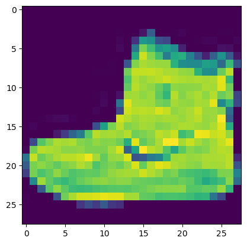

from matplotlib import pyplot as plt
from lovely_numpy import LoMNIST
MNIST (path='datasets', url=None, train=True, item_tfms=(), fashion=False)
MNIST Dataset
load_fashion_mnist
load_fashion_mnist (path, url_base)
load_mnist
load_mnist (path, url)
mnist_batch_tfm
mnist_batch_tfm (x, y)
mnist = MNIST()
plt.imshow(mnist.x[0])
Lo(mnist.x), Lo(mnist.y), Lo(mnist.x[0])File datasets/mnist.npz already exists(array[60000, 28, 28] f32 n=47040000 (0.2Gb) x∈[0., 255.000] μ=33.318 σ=78.567,
array[60000] i32 0.2Mb x∈[0, 9] μ=4.454 σ=2.889,
array[28, 28] f32 n=784 (3.1Kb) x∈[0., 255.000] μ=35.108 σ=79.649)
mnist_dl = DataLoader(mnist, batch_size=64, batch_tfms=[mnist_batch_tfm])
x, y = next(iter(mnist_dl))
x, y(Tensor[64, 784](name="?" op=Load):
v=array[64, 784] f32 n=50176 (0.2Mb) x∈[-0.500, 0.500] μ=-0.368 σ=0.309
∇=array[64, 784] f32 n=50176 (0.2Mb) all_zeros,
Tensor[64](name="?" op=Load):
v=array[64] i32 x∈[0, 9] μ=4.719 σ=3.223
∇=array[64] f32 all_zeros)
mnist = MNIST(fashion=True)
plt.imshow(mnist.x[0])Downloading https://storage.googleapis.com/tensorflow/tf-keras-datasets/train-images-idx3-ubyte.gz to datasets/train-images-idx3-ubyte.gz
Downloading https://storage.googleapis.com/tensorflow/tf-keras-datasets/train-labels-idx1-ubyte.gz to datasets/train-labels-idx1-ubyte.gz
Downloading https://storage.googleapis.com/tensorflow/tf-keras-datasets/t10k-images-idx3-ubyte.gz to datasets/t10k-images-idx3-ubyte.gz
Downloading https://storage.googleapis.com/tensorflow/tf-keras-datasets/t10k-labels-idx1-ubyte.gz to datasets/t10k-labels-idx1-ubyte.gz<matplotlib.image.AxesImage>
Lo(mnist.x), Lo(mnist.y), Lo(mnist.x[0])(array[60000, 28, 28] u8 n=47040000 (45Mb) x∈[0, 255] μ=72.940 σ=90.021,
array[60000] u8 59Kb x∈[0, 9] μ=4.500 σ=2.872,
array[28, 28] u8 n=784 x∈[0, 255] μ=97.254 σ=101.792)